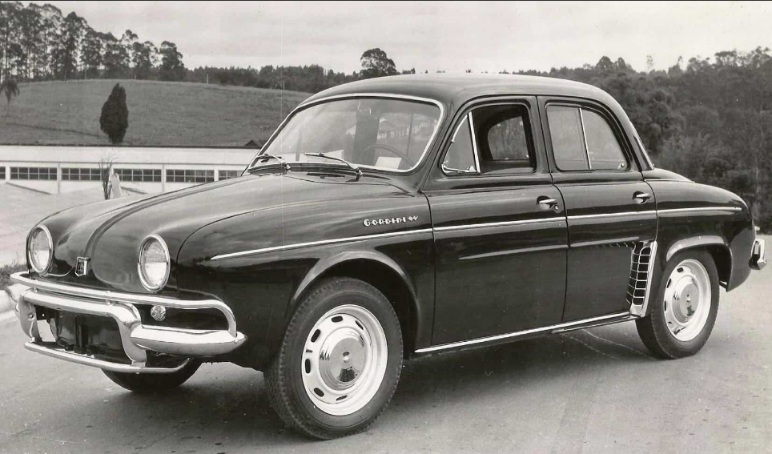
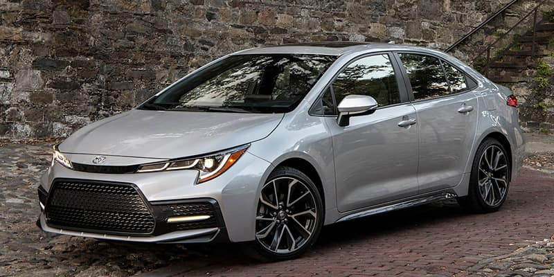

Carro Popular refere-se aos veículos produzidos com a intenção de serem vendidos a um grande número de consumidores. Suprindo as necessidades básicas e um custo acessível ao comprador.
O primeiro carro a se tornar popular NO BRASIL foi em 1959 ''Willys Gordini''.
Willys Gordini possui um total de 120 cv maxímo sendo mais veloz que seu concorrente VW fusca.
O kwid possui um cv de 65/70 com Aceleração de 0 a 100 km/h: 13,2 segundos e velocidade máxima: 152/156 km/h.
O Mobi possui um cv de 71/74 com Aceleração de 0 a 100 km/h: 14 - 14,9 segundos e velocidade máxima: 152 km/h.
O HB20 possui um cv de 80-120 com Aceleração de 0 a 100 km/h 9,3 - 14,5 segundos e velocidade maxima: 183 km/h.
O CarroPopular mais vendido do mundo é o Toyota Corolla.
O Corolla vendeu mais de 50 milhões de únidades desde o seu lançamento, sendo considerado o CarroPopular mais vendido do mundo.